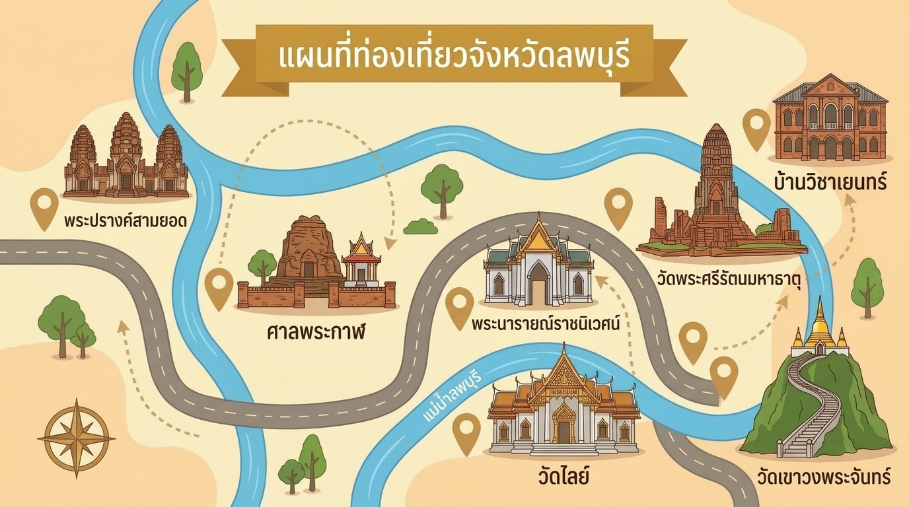

Heritage Pass
ลพบุรี
เมืองสามยุค · ทวารวดี ขอม อยุธยา
- 10 แห่งแหล่งประวัติศาสตร์
- 1 วันเดินเท้าเมืองเก่า
- 3 มิติหมุนชมได้
พร้อมสำรวจเมืองสามยุคแห่งลพบุรีหรือยัง?
Heritage Pass
เมืองสามยุค · ทวารวดี ขอม อยุธยา
--°
กำลังโหลดสภาพอากาศ…
ลพบุรี
ข้อมูล: Open-Meteo.com (CC BY 4.0) · อัปเดตอัตโนมัติทุก 15 นาที
Diorama
↻ ลาก / ปุ่มลูกศร เพื่อหมุน · ดับเบิลคลิกเพื่อรีเซ็ต · แบบจำลองเรียบง่าย

สำรวจแผนที่ช่วงฤดูหนาวของไทยอากาศเย็นสบาย เหมาะกับการเดินเมืองเก่าและขึ้นเขา (คำแนะนำทั่วไป ตรวจพยากรณ์ล่าสุดที่วิดเจ็ตอากาศ)
ปลาย พ.ย. · งานเลี้ยงลิง ปลาย ม.ค.–ต้น ก.พ. · งานนมัสการเขาวงพระจันทร์
10
แหล่งประวัติศาสตร์
3
ยุคสมัยหลัก
33+
แหล่งอ้างอิง
Timeline
ลพบุรีบางครั้งปรากฏในชื่อ “ละโว้” หรือ “ลวปุระ” เป็นเมืองท่าสำคัญของวัฒนธรรมทวารวดีและเขมรพระนคร ก่อนกลับมารุ่งเรืองอีกครั้งในฐานะราชธานีแห่งที่สองสมัยสมเด็จพระนารายณ์
Interactive Map
แตะหมายเลขบนอาคารเพื่อไปอ่านรายละเอียด แผนที่เป็นภาพประกอบเชิงสัญลักษณ์ ไม่ใช่มาตราส่วนจริง
ภาพแผนที่ประกอบ: จัดเตรียมโดยเจ้าของโปรเจกต์ (ภาพแสดงเฉพาะ 7 จากทั้งหมด 10 แห่ง)
10 Historical Sites
ลากโมเดล 3 มิติ (Three.js) เพื่อหมุนชมอาคารจำลอง — เป็นรูปทรงเรียบง่ายเพื่อสื่อโครงสร้างหลัก ไม่ใช่แบบสำรวจจริง อ่านข้อมูลแยกเป็นประวัติ สถาปัตยกรรม ไฮไลต์ และเคล็ดลับ พร้อมแหล่งอ้างอิง
ไม่พบสถานที่ในหมวดนี้
One-Day Walk
แปดจุดอยู่ในย่านเมืองเก่าและใกล้กันมาก เหมาะกับการเดินเท้า (ลำดับเป็นข้อเสนอแนะ ตรวจสอบเวลาเปิดของแต่ละแห่งก่อนไป) วัดเขาวงพระจันทร์อยู่ไกลออกไป ควรแยกเป็นอีกทริป
ทริปแยก · วัดเขาวงพระจันทร์ อ.โคกสำโรง — ขึ้นลง 3,790 ขั้น ใช้เวลาหลายชั่วโมง ควรไปช่วงเช้า
อ่านรายละเอียดGuestbook
เขียนความประทับใจ เคล็ดลับ หรือภาพจำจากการไปเยือนลพบุรี
Credits & Sources
นโยบายภาพและวิดีโอ: เว็บนี้ไม่คัดลอกภาพถ่ายหรือวิดีโอของบุคคลอื่นมาฝังโดยไม่ระบุที่มา ภาพถ่ายจริงแต่ละที่จะแสดงชื่อผู้ถ่าย สัญญาอนุญาต และลิงก์ต้นทางใต้ภาพทุกครั้ง วิดีโอแสดงชื่อช่องและลิงก์ไปยัง YouTube ซึ่งเป็นผู้ถือสิทธิ์
โมเดล 3 มิติ: สร้างขึ้นใหม่ด้วยโค้ดเป็นรูปทรงจำลองอย่างง่าย เรนเดอร์ด้วย Three.js (MIT) มีตัวสำรองเป็น CSS 3D ไม่ได้ดัดแปลงจากภาพถ่ายหรือโมเดลของผู้อื่น
สภาพอากาศ: ข้อมูลจาก Open-Meteo.com (CC BY 4.0) ดึงในเบราว์เซอร์ของผู้ชม โดยส่งเฉพาะพิกัดตัวเมืองลพบุรี
ข้อควรระวัง: เวลาเปิด ค่าเข้าชม และการเดินทางเปลี่ยนแปลงได้ โปรดตรวจสอบกับกรมศิลปากรหรือสำนักศิลปากรที่ 4 ลพบุรีก่อนเดินทาง
| สถานที่ | ภาพถ่ายจริง | วิดีโอ |
|---|